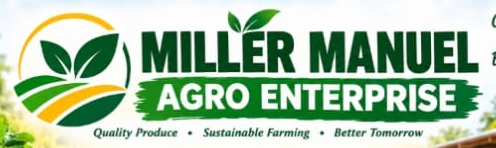

FRESH PRODUCE
Fresh Waterleaf
Fresh waterleaf stems for soups, stews and everyday cooking. Suitable for households, food vendors and other buyers.
View Product Details →
Miller Manuel Agro EnterpriseFRESH PRODUCE • LIVESTOCK • POULTRY • SOIL CARE
From fresh waterleaf and quality bagged manure to pigs and poultry, Miller Manuel Agro Enterprise provides practical agricultural products for households, farmers, gardeners and livestock buyers.
OUR PRODUCTS
Explore our range of agricultural products. Contact us to confirm availability, prices and quantities.
FRESH PRODUCE
Fresh waterleaf stems for soups, stews and everyday cooking. Suitable for households, food vendors and other buyers.
View Product Details →SOIL CARE
Manure for gardeners and farmers looking to improve their soil. Ask us about available bag sizes, manure type and suitable uses.
View Product Details →LIVESTOCK
Looking to purchase pigs for your livestock business or farm? Contact us to enquire about available pigs, sizes and purchasing arrangements.
View Product Details →POULTRY FARMING
Explore our poultry offerings for farmers and other interested buyers. Contact us to confirm the available birds, quantities and prices.
View Product Details →ABOUT OUR BUSINESS
Miller Manuel Agro Enterprise serves customers looking for fresh agricultural produce, soil improvement materials and livestock.
We bring different agricultural products together in one convenient place, making it easier for customers to enquire about their needs and discuss orders directly with us.
Fresh produce, responsible farming and agricultural opportunities for our community.
✦WHY CHOOSE US?
We focus on clear communication and helping customers find the agricultural products they need.
Enquire about waterleaf, manure, pigs and poultry through one business.
Discuss product availability, prices and purchasing arrangements directly with us.
Access products serving household needs, gardening and farming activities.
Contact Miller Manuel Agro Enterprise to enquire about products, current prices, quantities and collection arrangements.